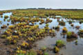
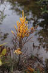
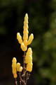
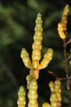
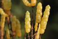
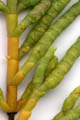

Common name in Tamil : Umari keerai






Diagnostic characters
Botany & morphology
Regeneration
Reproductive biology
Ecology
Distribution
Erect or decumbent herb to 20 cm tall; stems succulent, leafless and jointed. Flowers minute.
Stem branched, fleshy, more or less erect, terete, jointed, constricted at nodes; internode narrowed below and broadened above.
Inflorescence slender spikes.
Flowers whitish, bisexual, minute, ternate in axils of scaly bracts and sunk in superposed and decussately opposite cavities of internodes, bracteoles 2; perianth calycine, obpyramidal; stamen one, anther oblong; ovary ovoid, stigmas 2, subulate.
Fruits utricle, ovoid, membranous, enclosed in spongy perianth; seed pale brown, hispid with white hairs.
Epigeal germination.
Pollination by insects.
Crassulescent halophytes of the back-mangroves zone. Common on saline mud flats, degraded mangrove areas and aquafarms.
Throughout India and in Sri Lanka - Jaffna, Hambantota and Kirinda.
Top of the page